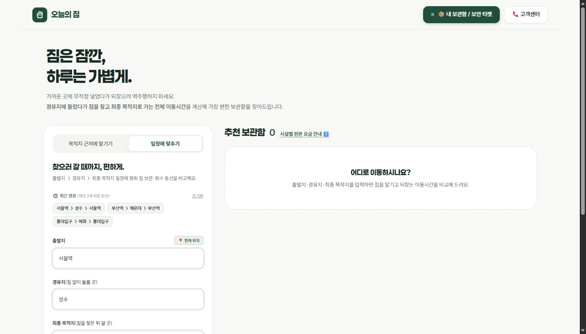
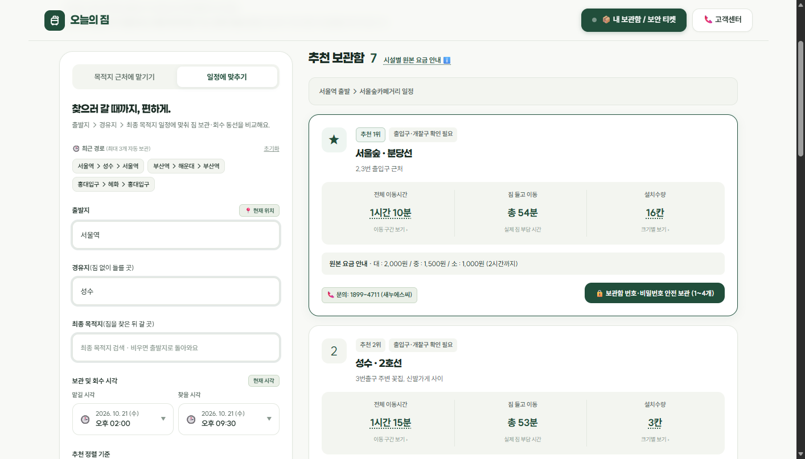
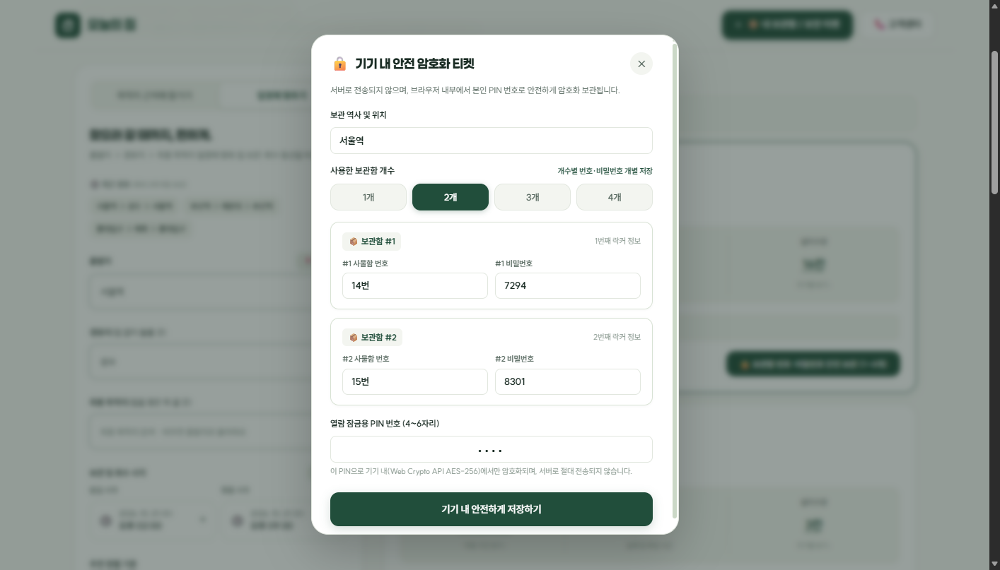
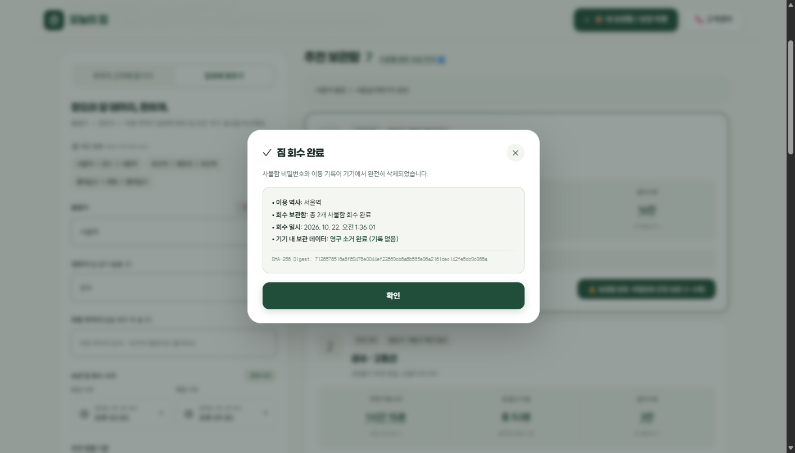
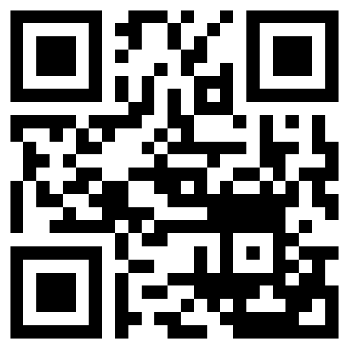

🔍
화면 캡처 원본
(클릭하거나 ESC 키를 누르면 닫힙니다)
역에 도착해 짐을 맡길 때 겪는 동선 낭비와, 짐을 맡긴 뒤에 남는 보안 사각지대
• 기존 지도 한계: 현재 위치 주변만 표시하여 하루 일정에 맞는 보관소 탐색 불가.
• 비효율 동선: 무작정 이동 후 짐 찾으러 40분씩 역주행하는 시간·체력 낭비 발생.
• 관광 통계: 여행객이 짐 운반으로 낭비하는 시간 하루 평균 45분~1시간 소진.
• 평문 저장: 10명 중 6명이 메신저나 메모장에 32번 / 비번 1024 형태로 방치.
• 숄더 서핑: 지하철·카페에서 화면을 열 때 어깨 너머로 비밀번호 노출 위험.
• 범죄 심각성: 사물함 가로채기 피해 증가로 전 역사 도어락 OTP 전면 교체 추진.
출발지, 방문지, 숙소를 입력하면 전체 동선에서
짐 들고 걷는 시간을 최소화하는 보관소를 1순위 추천합니다.
비밀번호를 외부 서버로 일절 전송하지 않고,
브라우저 Web Crypto 금고에 암호화 보관해 도난을 방지합니다.

• 전체 동선 최적화: 출발지 인접성만 보는 대신 4개 구간의 이동 동선을 종합 분석합니다.
• 피로도 최소화: 짐을 들고 걷는 시간(Carry Time)과 회수 우회 시간(Detour)을 최소화합니다.
• 이동 효율 극대화: 여행자가 짐 없이 가볍게 이동할 수 있는 자유 시간을 최대로 확보합니다.
30km 이상 광역 이동 시 KTX 직통 편성과
지정한 회수 시각에 맞춘 복귀 열차를 함께 계산합니다.
코레일, 서울교통공사, 전국 5대 도시철도 데이터를 통합해
285개 주요 거점 역사 대상 자동화 검증을 완료했습니다.
• 센서 없는 보관소의 허위 실시간 잔여석 표기를 배제하여 헛걸음 방지.
• 규격별 총 칸수, 요금표, 운영사 직통 전화번호를 투명하게 제공.
• 만차 대비 '플랜 B 대안역' 및 심야 셔터 마감(24:00) 안내 기본 탑재.
개인 PIN 기반 PBKDF2 10만 회 연산으로 암호화 키 유도,
AES-256-GCM 적용으로 외부 서버 전송 없이 안전하게 보관합니다.
보관함 1~4개 개별 등록 지원 및 평소 비밀번호 마스킹(••••) 처리,
필요할 때만 개인 PIN을 입력해 확인하므로 화면 노출을 방지합니다.
스마트폰 분실 시 무차별 번호 대입을 방어하기 위해,
개인 PIN 5회 연속 오입력 시 30초 동안 입력을 자동 동결합니다.
짐을 찾고 '보관 종료' 시 로컬 저장소 키를 128바이트 난수로 덮어써
디지털 영구 파기를 완결하고 처리 내역을 제공합니다.
서울역으로 되돌아가는 역주행 대신 방문지인 성수역에 바로 맡겨
짐을 들고 걷는 시간(Carry Time)을 크게 절감하도록 추천합니다.
• 자정(24:00) 역사 셔터 마감 전 회수하도록 심야 경고 배지 표시.
• 만차 시 즉시 선택 가능한 대체역 및 운영사 다이렉트 통화 지원.



